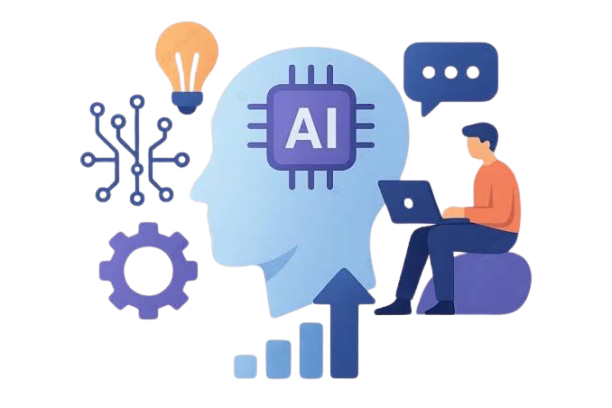
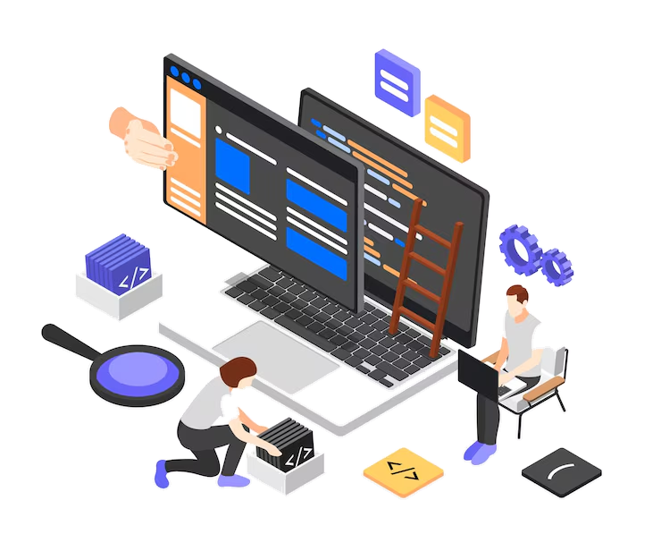
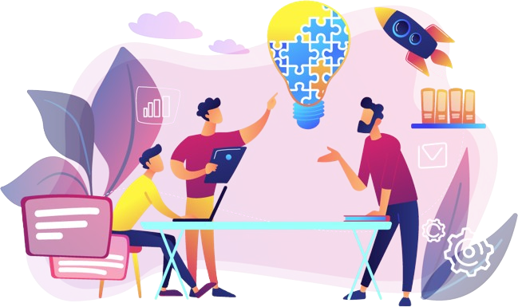

SoftwareDisruption-FZCO
This document contains answers to the most common questions asked by organisations evaluating Software Disruption for AI, data engineering, data science, product management, and resource augmentation engagements. Every answer is written to be direct, complete, and useful - with no vague marketing language.
Who we are, where we operate, the industries we serve, and how we work with companies of every size.

Our end-to-end AI/ML capabilities, MLOps practices, generative AI solutions, explainability, and how to assess AI readiness.
Explore AI & Machine Learning
Pipelines, warehouses, data lakes, ETL vs ELT, and cloud migration — the infrastructure behind every insight.
Explore Data Engineering
From strategy and exploratory analysis to predictive models, BI dashboards, and team augmentation.
Explore Data Science
Product strategy, discovery, Fractional CPO leadership, and how we plug into your existing teams.
Explore Product Management
Pre-vetted senior professionals who join your team — how it works, how fast, and what roles we cover.
Explore Resource AugmentationTransparent pricing for every engagement model — and a free initial consultation with no obligation.
Explore Pricing & CostsTypical timelines, IP ownership, and the cloud platforms and tools our teams work with every day.
Explore Process & Delivery
Data security, UAE & Saudi data residency, and intellectual property protection on every engagement.
Book a free 45-minute discovery call — no obligation, no sales pitch. We will assess your data readiness, discuss your business challenges, and identify where we can add the most value. You will receive a tailored recommendation and an outline engagement proposal within five business days.